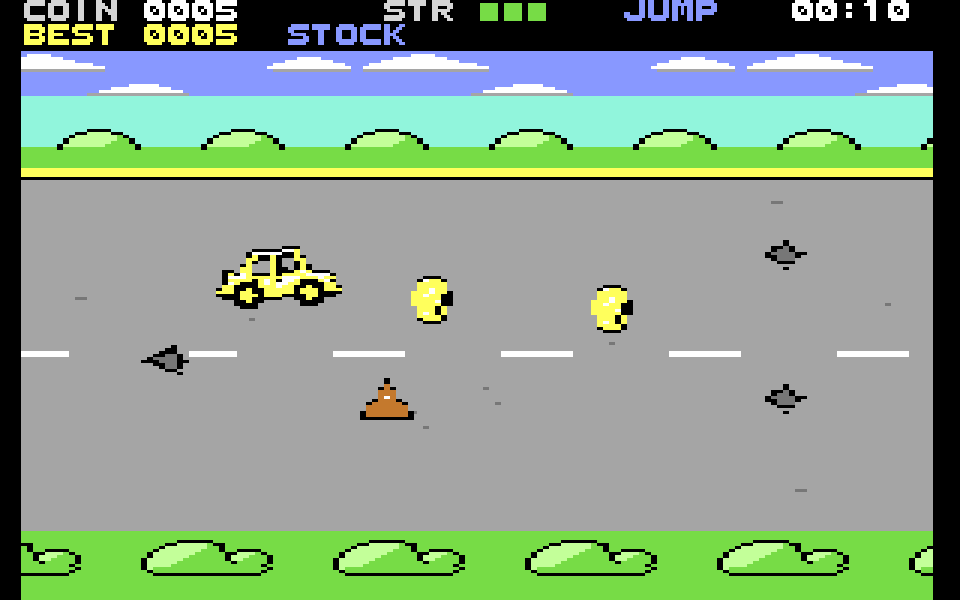

THE ROAD AHEADLA RUTA TE ESPERA
The road is more hole than asphalt, and the only way through is fast. Steer around the potholes, grab every coin you can, and save your jump for when you really need it. Every coin you bring home goes into the bank, to buy a tougher or faster car and a trail to show off with. How long can you last?
La ruta tiene más pozo que asfalto, y la única forma de pasar es ir rápido. Esquiva los baches, recoge todas las monedas que puedas y guarda el salto para cuando de verdad lo necesites. Cada moneda que traes a casa va al banco, para comprar un auto más resistente o más rápido y una estela para lucirte. ¿Cuánto vas a aguantar?
Sebas Zayas created it in 2014 on MIT's Scratch website, and his father, Carlos Zayas, brought it to retro computers, a new version for each machine, making the most of what each one can do.
Sebas Zayas lo creó en 2014 en el sitio de Scratch del MIT, y su padre, Carlos Zayas, lo llevó a las computadoras retro, una versión nueva para cada máquina, que aprovecha lo que cada una puede hacer.
CHOOSE YOUR MACHINEELIGE TU MÁQUINA
COMMODORE 64

Version 1.0.2Versión 1.0.2
For PAL, NTSC and Drean machines, on disk and on EasyFlash cartridge, with music for the SID chip.
Para máquinas PAL, NTSC y Drean, en disco y en cartucho EasyFlash, con música para el chip SID.
MEGA65

Version 1.0.0Versión 1.0.0
With five landscapes, stereo sound on four SID chips and a car radio with eleven tracks.
Con cinco paisajes, sonido en estéreo con cuatro chips SID y una radio en el auto con once temas.
Don't have the machine? Both also come for Windows and Linux, with the emulator included and all set up: download and play.
¿No tienes la máquina? Los dos vienen también para Windows y Linux, con el emulador incluido y ya preparado: se descarga y se juega.
Pothole Rush is free, and it's also on itch.io, where you can pay what you want. Any contribution helps us keep improving it and make new games.
Pothole Rush es gratis, y también está en itch.io, donde puedes pagar lo que quieras. Cualquier aporte nos ayuda a seguir mejorándolo y a hacer juegos nuevos.